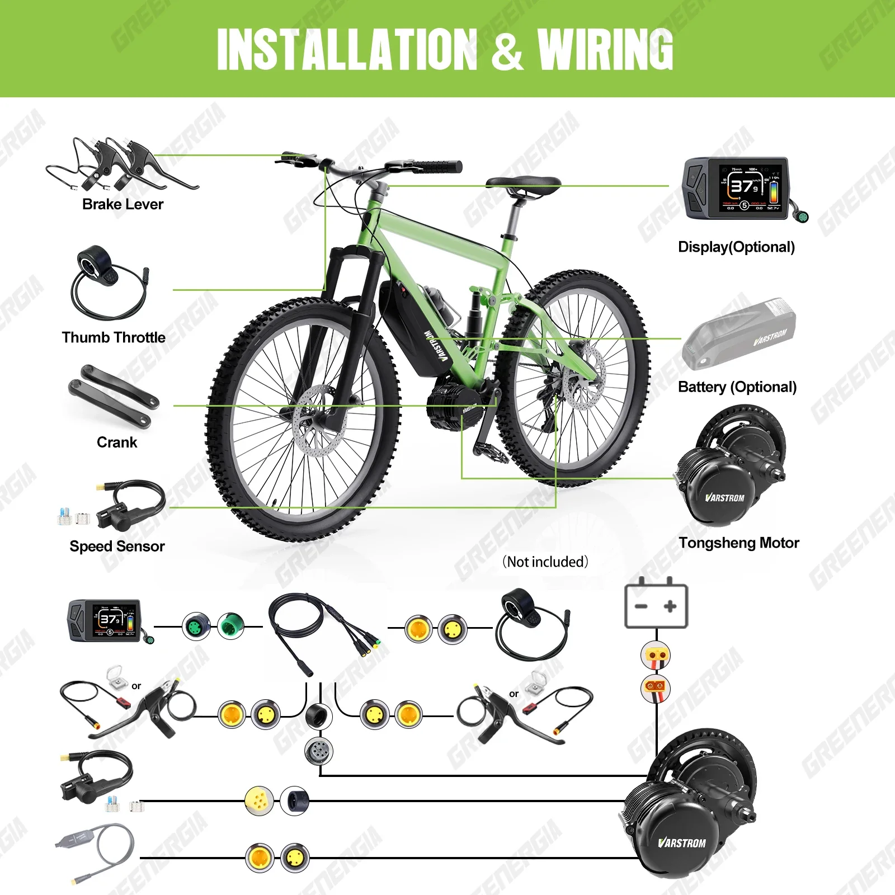
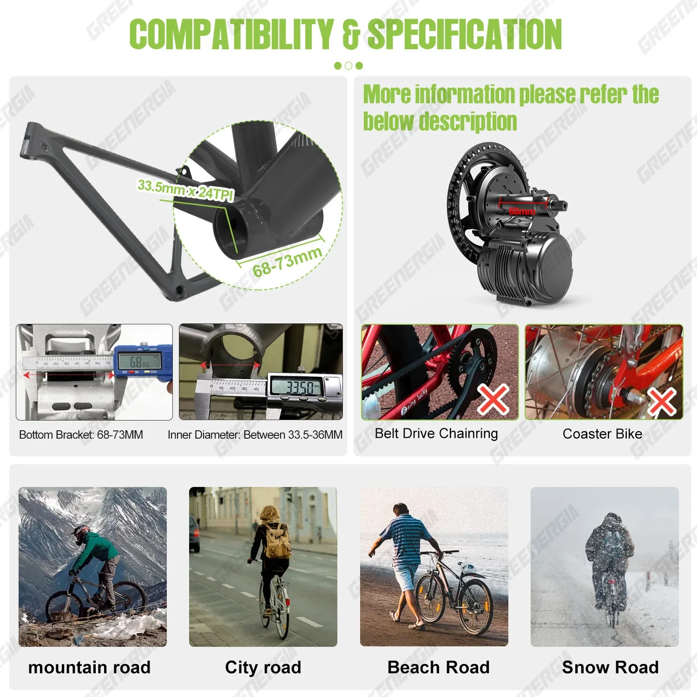
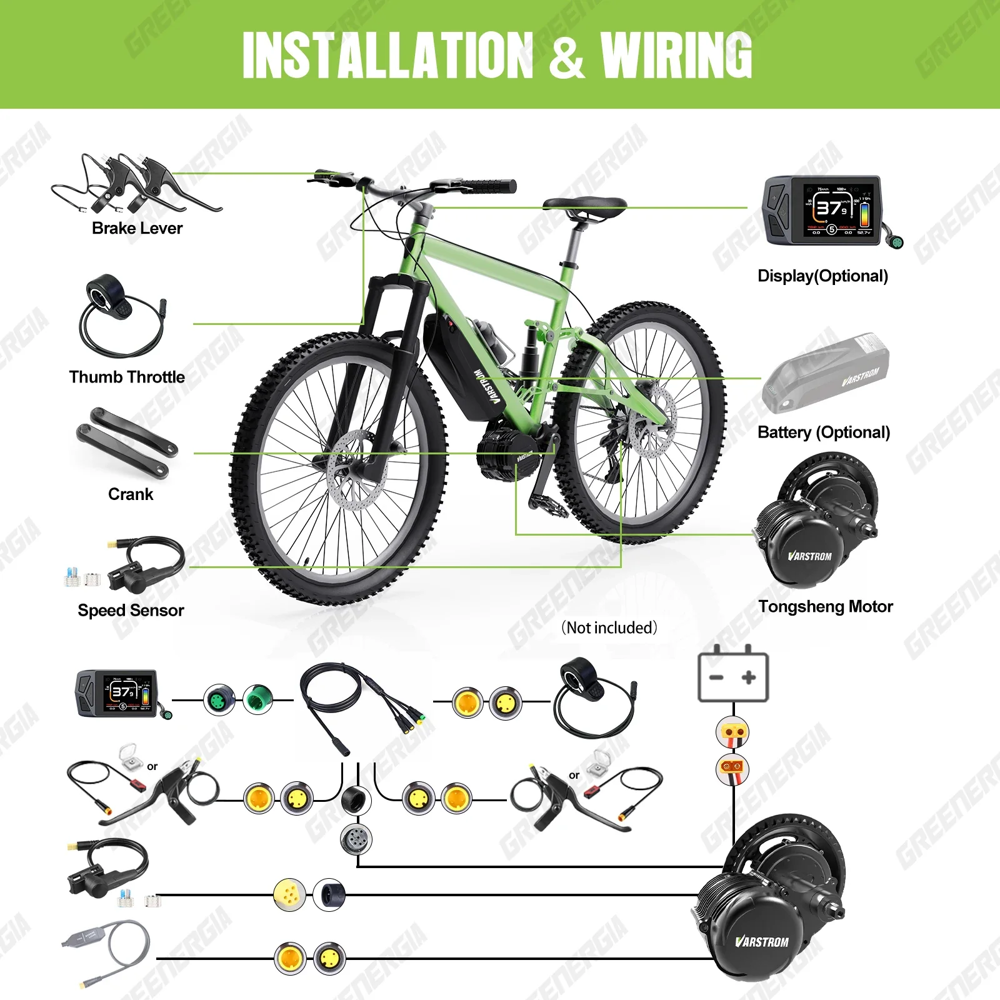
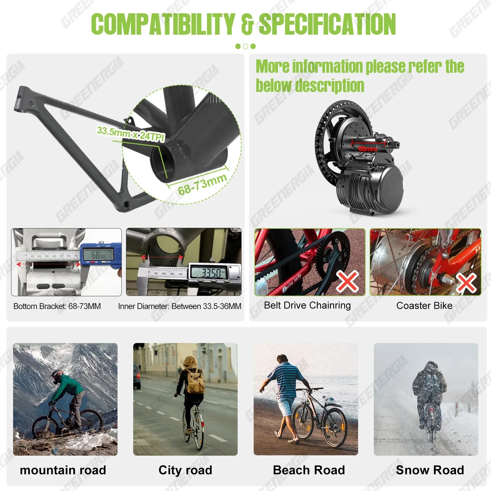
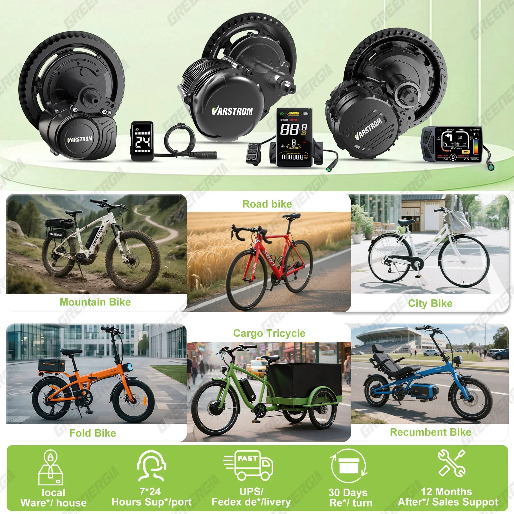
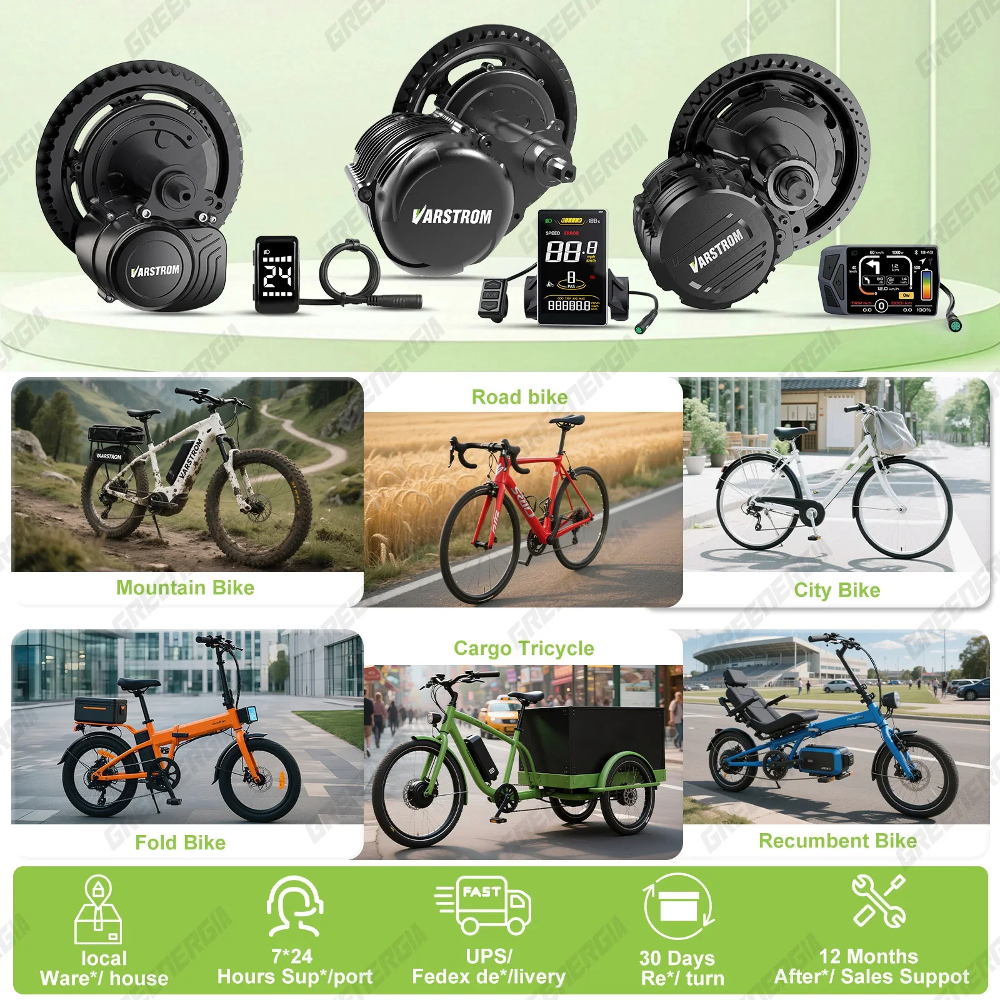

 

Sada pro přestavbu elektrokola BAFANG Varstrom TSDZ16 1000W, TSDZ8 750W, TSDZ2B 500W a 250W se středním pohonem a senzorem točivého momentu (BB 68-73mm)
Uvolněte sílu elektrokola s motorovými sadami Varstrom řady TSDZ Mid. Tyto sady, navržené pro bezproblémovou integraci a strhující výkon, promění vaše kolo v elegantní a efektivní elektrokolo.
Vyberte si z řady výkonných motorů, které odpovídají vašemu stylu jízdy:
- 1000W TSDZ16: Zdolejte náročný terén s bezkonkurenčním točivým momentem a rychlostí.
- 750W TSDZ8: Zažijte strhující zrychlení a snadné stoupání do kopce.
- 500W TSDZ2B: Užijte si rovnováhu mezi výkonem a efektivitou pro každodenní jízdu.
- 250W: Ideální pro běžné jízdy a dojíždění, nabízí plynulou asistenci, aniž by přehlušovala váš zážitek.
Tyto sady jsou vybaveny přesným senzorem točivého momentu a poskytují přirozenou a citlivou asistenci při šlapání. Systém se plynule přizpůsobí vaší síle při šlapání a poskytne vám perfektní množství energie, když ji nejvíce potřebujete.
Řada Varstrom TSDZ se pyšní kompatibilitou s širokou škálou jízdních kol díky konstrukci středového složení BB 68–73 mm. Zažijte vzrušení z jízdy na elektrokole a pozvedněte svá jízdní dobrodružství na vyšší úroveň.
Sady pro přestavbu na střední motor Varstrom TSDZ16, TSDZ8, TSDZ2B a 250W nabízejí výkonný způsob, jak elektrifikovat vaše kolo. Tyto sady se vyznačují špičkovou technologií a designem pro lepší zážitek z jízdy.
- Střední hnací motor: Centrálně umístěný motor poskytuje vynikající přenos výkonu a účinnost a poskytuje plynulou asistenci při šlapání po celou dobu jízdy.
- Snímač točivého momentu: Přesně snímá sílu šlapání a dodává proporcionální výkon, napodobující pocit přirozeného šlapání.
- Různé možnosti výkonu: Vyberte si z výkonných motorů o výkonu 1000 W, 750 W, 500 W nebo 250 W v závislosti na požadovaném výkonu a jízdních podmínkách.
- Kompatibilita se středovým složením: Navrženo pro širokou škálu jízdních kol s průměrem středového složení (BB) mezi 68 mm a 73 mm.
Sady motorů Varstrom TSDZ16, TSDZ8, TSDZ2B a 250 W jsou vyrobeny z robustních komponentů pro zajištění spolehlivého výkonu.
- Typy motorů: TSDZ16 (1000 W), TSDZ8 (750 W), TSDZ2B (500 W), 250 W
- Rozměr středového složení: 68 mm - 73 mm
Zvyšte svůj cyklistický zážitek se sadami motorů Varstrom pro střední třídu.
- Zvýšený výkon a dojezd: Zdolávejte kopce bez námahy a prodlužujte dojezdovou vzdálenost.
- Snížená fyzická zátěž: Užijte si jízdy bez námahy a delší cesty budou pohodlnější.
- Ekologická doprava: Vyberte si udržitelnou alternativu k vozidlům na benzínový pohon.
Instalace sad Varstrom TSDZ16, TSDZ8, TSDZ2B a 250 W je relativně jednoduchá. Sada obvykle obsahuje všechny potřebné komponenty a podrobné pokyny pro hladký proces instalace.
Po instalaci můžete motor bez problémů integrovat do stávající sestavy vašeho jízdního kola. Snímač točivého momentu automaticky upraví výstupní výkon na základě vaší síly při šlapání, což zajistí přirozený a responzivní zážitek z jízdy.